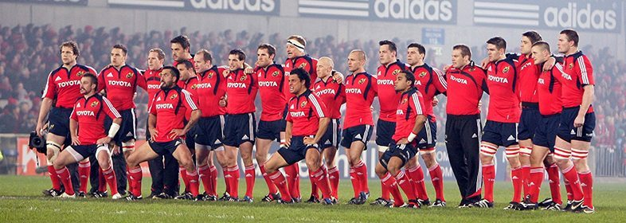

Manchester United
Manchester United Football Club is a professional football club based in Old Trafford, Greater Manchester, England, that competes in the Premier League, the top flight of English football. Nicknamed "the Red Devils", the club was founded as Newton Heath LYR Football Club in 1878, changed its name to Manchester United in 1902 and moved to its current stadium, Old Trafford, in 1910. Manchester United have won more trophies than any other club in English football with a record 20 League titles, 12 FA Cups, 5 League Cups and a record 21 FA Community Shields. United have also won three UEFA Champions Leagues, one UEFA Europa League, one UEFA Cup Winners' Cup, one UEFA Super Cup, one Intercontinental Cup and one FIFA Club World Cup. In 1998–99, the club became the first in the history of English football to achieve the continental European treble.By winning the UEFA Europa League in 2016–17, they became one of five clubs to have won all three main UEFA club competitions. The 1958 Munich air disaster claimed the lives of eight players. In 1968, under the management of Matt Busby, Manchester United became the first English football club to win the European Cup. Alex Ferguson won 38 trophies as manager, including 13 Premier League titles, 5 FA Cups and 2 UEFA Champions Leagues, between 1986 and 2013 when he announced his retirement. Manchester United was the highest-earning football club in the world for 2016–17, with an annual revenue of €676.3 million and the world's most valuable football club in 2018, valued at £3.1 billion. As of June 2015, it is the world's most valuable football brand, estimated to be worth $1.2 billion. After being floated on the London Stock Exchange in 1991, the club was purchased by Malcolm Glazer in May 2005 in a deal valuing the club at almost £800 million, after which the company was taken private again, before going public once more in August 2012, when they made an initial public offering on the New York Stock Exchange. Manchester United is one of the most widely supported football clubs in the world and has rivalries with Liverpool, Manchester City, Arsenal, and Leeds United.

Munster
Munster's first appearance in the Heineken Cup's final was in the 1999–2000 Heineken Cup, where they lost by one point to Northampton at Twickenham. Nevertheless, the season was most memorable with a 25–31 win over Toulouse in Bordeaux. Their good form and bad luck continued in the following season, 2000–01, with a semi-final defeat to Stade Français, again by one point, where a try from John O'Neill [2] was disallowed by the referee, as he deemed the ball to be out over the dead-ball line. In the 2001–02 Heineken Cup, Munster lost the last match of their pool at Castres, but qualified as best runners-up. Munster beat Stade Français 16–14 in Paris, the only try of the game coming from Anthony Horgan. It was then on to Béziers to meet Castres again for the semi-final. Munster were triumphant and went to the final at Millennium Stadium to meet the reigning champions, Leicester. Munster lost a tight game remembered as 'the hand of Back' final, as the Leicester flanker used his hand illegally in a scrum when Munster had a last-chance attack. Munster also reached the final of the Celtic League in this season, but lost 24–20 to Leinster at Lansdowne Road, Dublin. In 2002–03, Munster reached the quarter-finals after a win against Gloucester, later issued on VHS under the title "The Miracle Match". In this game, Munster needed to win by a margin of at least 27 points and score a minimum of four tries to earn a quarter-final berth. They won 33–6 with four tries in a game that has become part of Munster Rugby folklore. They again faced Leicester, this time at the Tigers' home of Welford Road, and defeated the reigning champions to progress to the semi-finals. They faced Toulouse in the semi-finals and lost out on a place in the final, after losing by a single point in France. In this season, Munster won the Celtic League for the first time, by beating Neath-Swansea Ospreys 37–17 at the Millennium Stadium, Cardiff. In 2003–04 it was more of the same. After an assured performance in the Pool stage, Munster defeated Stade Français at Thomond Park to set up a semi-final date with English champions, London Wasps. This match has gone down as one of the best Heineken Cup matches of all time. Although leading by 10 points in the second half, and having lost Ronan O'Gara to injury early on, they succumbed to 2 Wasps tries in injury time, resulting in a Wasps v Toulouse final. Munster finished in a disappointing seventh position in the 2003–04 season of the Celtic League. In 2004–05, after a shaky performance in the Pool stage, Munster qualified as 5th seeds and played Biarritz away. The match was played at Real Sociedad's ground, the Anoeta Stadium, in San Sebastián, Spain – the first Heineken Cup game ever played in Spain. Biarritz won 19–10 to avenge a 38–29 defeat at the same stage in 2001. Munster finished second in the 2004–05 Celtic League season. Inside the Millennium Stadium for the 2006 final where over 65,000 Munster fans were present In 2005–06, Munster qualified to the final of the Heineken Cup, having overcome rivals Leinster 30–6 in the semi-final at Lansdowne Road. The final was held at the Millennium Stadium against Biarritz. Munster won 23–19 to become European Champions for the first time. Munster finished one place lower than the previous season in the Celtic League, finishing third overall.
